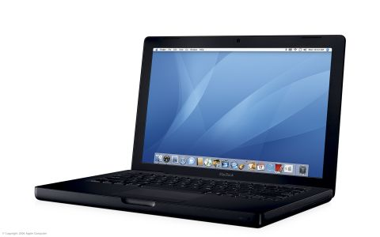

For those that haven’t figured it out, I'm owned a lot of Apple Macs over the years.
I miss the days of black Macs like these:
|

|
To be honest I've owned a lot of Macs over the years, including a Mac Plus, SE, Several LCs, LC2s, an LC III, 2 x IIci's, several Powerbook 190s, PowerMac 7100/80, PowerMac 8100/80 (later upgraded to a G3), a PowerMac 9600, a Performa 6360, a Powerbook 1400cs, a Powerbook 2400, several PowerMac 7200, 7500 and 7600 machines, a Blue and White G3 300 (later upgraded to G4), A Quicksilver 733, a Mac Cube 450, 2x Titanium G5 Powerbook 500, a clamshell ibook SE, a Core Duo Black MacBook (above), a MacBook Pro, several MacBook Airs and many Mac Minis (I ditched towers/desktops when the Mini came along). And to top it off I've had another two dozen Macs pass through my hands for refurbishment and onsale.
In my professional career I've looked after the Mac fleets of several corporate inhouse studios, done freelance support for several sole traders with Macs and done the development and support (hardware, software, databases, web portals etc) for the Enterprise workgroup of an automated typesetting facility powered by Mac towers, XServes and Minis in multiple locations for MetService.
I've scaled back from those days, now only supporting now and then a professional photographer, doing some publishing collboration with a Mac owner in the UK, and doing work on my M4 Pro Mac Mini in my home office. I've got 2 Mac Minis - bu the legacy 2014 model is slated for the chopping block soon.
And if you were wondering, I was an Atari owner before I moved to Macs.
I do use Windows extensively in my professional career as well and normally maintain some emulated or virtualised Windows environments on my Macs - although I have little use for them these days.
And as anyone might figure out due to my time at MewtService, I do potter with Linux. I've had a few Raspberry Pi's at home over the years and I do have a Pi 400 desktop kit I'm looking to sell to get a 500 model. I like dabbling in opensource software and like assessing their ability to replace the mainstream comercial equivalents I've used on Mac and Windows for years.